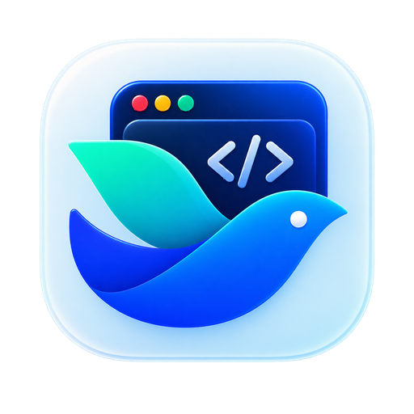

📱
设备模拟器
iPhone、Android 与 iPad 机型预设，真实 UA、DPR 与安全区；缩放 50%–200%，状态栏与导航栏同步渲染。

官方开发者工具停止支持 ARM 之后，FeishuDevTools 以 1:1 的界面与工作流复刻其「网页调试」模块： 设备模拟器、Chromium DevTools、飞书扫码登录、官方 JSAPI 与二维码预览——并为 AI 加上了 MCP。
macOS 13 Ventura 或更新版本 · arm64 · 开源 MIT 许可
界面结构、快捷键与交互细节均按官方工具逐项还原，切换过来不需要重新学习。
iPhone、Android 与 iPad 机型预设，真实 UA、DPR 与安全区；缩放 50%–200%，状态栏与导航栏同步渲染。
完整的 Elements / Console / Network / Sources 面板停靠在窗口右侧，与页面同一个渲染进程，零延迟。
用飞书 App 扫码即可登录，支持多租户切换；会话使用系统 Keychain 加密保存，随时退出。
注入与飞书客户端一致的 JSAPI 桥；tt.config
鉴权、requestAuthCode、剪贴板、定位、Toast、Modal 等即开即用。
一键生成真机预览二维码，或直接推送到本机飞书桌面端；localhost
自动替换为局域网地址。
深色 / 浅色 / 跟随系统；地址栏历史、清理缓存、中英文界面，以及带「帮助 · 设置 · 关于 · 检查更新」的系统菜单。
FeishuDevTools 内建一个仅监听本机回环地址的 MCP（Model Context Protocol）服务。 把它接到 Cursor、Claude 或任何 MCP 客户端，AI 就能自己打开页面、切换机型、截图、执行脚本、读取控制台与 JSAPI 调用记录—— 然后修好你的 bug。
navigateset_deviceset_zoomscreenshotevaluateget_domclickfillget_consoleget_jsapi_logtoggle_devtoolsclear_cache// Cursor · .cursor/mcp.json
{
"mcpServers": {
"feishu-dev-tools": {
"url": "http://127.0.0.1:17331/mcp"
}
}
}
应用内置自动更新：新版本发布后会提示下载，安装完成自动重启。
未经 Apple 公证的构建首次打开会被 Gatekeeper 拦截。在「系统设置 →
隐私与安全性」中点击「仍要打开」， 或在终端执行
xattr -dr com.apple.quarantine /Applications/FeishuDevTools.app。
首版只构建 Apple Silicon（arm64）。Intel Mac 请继续使用官方开发者工具；Windows 暂无计划。